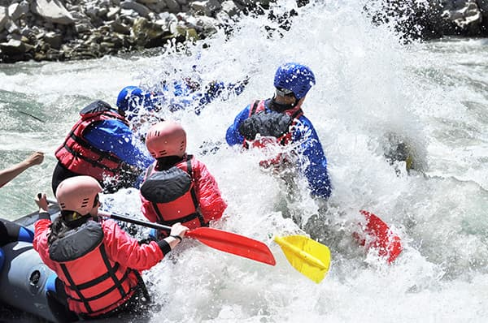
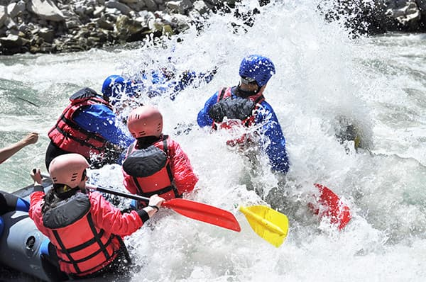

The Ibeno Beach project aims to serve as a premier online resource for both local and international tourists interested in exploring adventure activities in the South-South region of Nigeria, particularly at Ibeno Beach.

The Ibeno Beach project aims to serve as a premier online resource for both local and international tourists interested in exploring adventure activities in the South-South region of Nigeria, particularly at Ibeno Beach.
The Ibeno Beach project aims to serve as a premier online resource for both local and international tourists interested in exploring adventure activities in the South-South region of Nigeria, particularly at Ibeno Beach. It will showcase the beach's historical significance, natural beauty, and recreational opportunities, positioning it as a must-visit destination. By highlighting activities such as swimming, beach sports, and guided tours, the site will engage visitors year-round while emphasizing a commitment to safety and customer satisfaction through detailed information about safety standards and certifications. The website will function as a central hub for potential visitors to find transportation options, accommodation recommendations, and tips for maximizing their experience, while also encouraging community engagement through comments and shared experiences, fostering a sense of connection among beachgoers.
 
